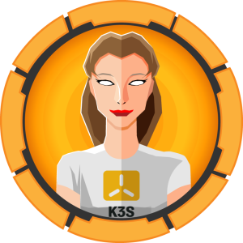

Highlighted how real-world compromises are often the result of chained misconfigurations rather than a single exploit. A web-facing weakness led to an internal pivot, exposed secrets enabled user access, and an overly permissive escalation path resulted in full host compromise. This lab reinforced key security fundamentals: strong credential hygiene, least privilege, network segmentation, and effective monitoring. Hands-on exercises like this are invaluable for understanding both offensive techniques and defensive controls.
Read More